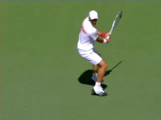
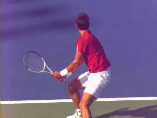
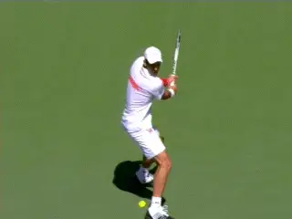
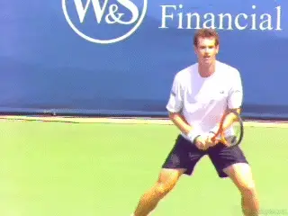
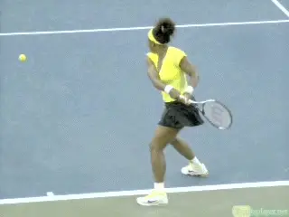
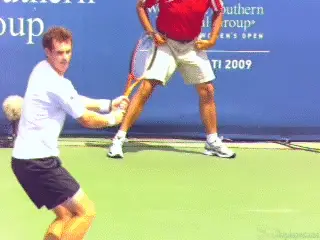
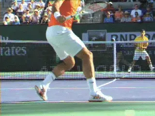
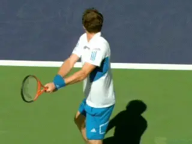
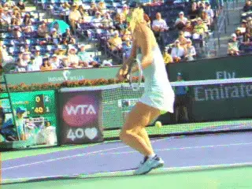
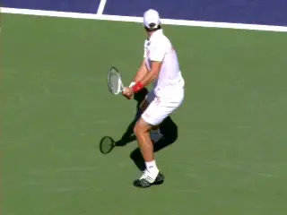

The ATP Two Handed Backhand:¶
The Take Back and Dynamic Slot
Dr. Brian Gordon
In the last article we looked at some of the underlying principles of muscle mechanics in our teaching system, based on quantitative biomechanical analysis (Click Here.) Now in the next two articles, let's see how these principles apply in creating our two handed backhand teaching model, what we have called the Type 3 or ATP style two-hander.
The Type 3 or ATP style two-hander, as we saw is one of three general technical styles ranging from junior and club tennis all the way to the top of the game. (Click Here.)
In this article let's look first at the critical elements of the backswing: the take back and the dynamic slot. Specifically what is the dynamic slot, how does it work, and how do you create it. Then in the final article we can focus on how the other components in completing the forward swing.

How does muscle optimization work in the ATP two-hander?
The Backswing
As we have implied Novak Djokovic is the near perfect model of these advanced stroke mechanics. So let's start by looking how he begins the motion and his initial take back position.

The outside backswing: an aggressive shoulder stretch and arm and racket mass away from the trunk.
The key point is to see how the hand path in the backswing is relatively low and moves somewhat away from his body to what we call the outside. This take back path is a one-piece backswing. It ends with the arms and racquet extended very far back (towards the back fence). Yet the arms and racquet are still on the hitting side (left) of the body. By one-piece I mean the hand path is continuous from the start of the backswing to the stretched back position. So what is the advantage of this position?
With the outside one-piece backswing, Novak is putting an aggressive stretch on the front shoulder. He's extending the right arm very far back. You can feel this stretch if you create this position for yourself.
Notice the spacing of the hand relative to the elbow and also the racquet relative to the hand. Notice also how much distance this creates between the shoulder joint and the arm and the racquet. The position of the left elbow is critical here. The left elbow is positioned even with the body (nearly in line with the shoulders) but never gets behind the body.
In addition to the shoulder stretch, this position maximizes mass away from the trunk. That is, the arms and racquet are positioned as far behind the torso as possible with a low hand position. This is a very powerful position for initiating the motion in the right (bottom) arm.

The leg drive and torso rotation cause the racket to lag and move closer to the body.
Ground Up – The Early Forward Swing
Now let's see how this position works by watching the sequence of the motion from the ground up. Novak's leg drive initiates a very aggressive pelvic rotation, and this in turn leads to an aggressive upper trunk rotation. This sequence of events is critical and allows the muscles of the torso to work in more optimal conditions This is an example of the "force-velocity" optimization achieved by segmental sequencing addressed in the previous article. (Click Here.)
Now watch what happens to the arm as the upper torso starts to turn. Because the arms and racquet are extended so far behind the torso, when the torso turns the arms will tend to lag behind.
This lag will create additional stretching (in addition to that achieved by the aggressive positioning during at the end of the backswing) of the right shoulder muscles. If these muscles were at the same time contracting to accelerate the right arm forward then this would constitute muscular optimization via pre-tension. Pre-tension, again, as described in the previous article as one of the attributes of the stretch-shorten cycle.

The one piece backswing with as much mass away from the body.
Therefore it is possible to optimize performance of the muscles of the right shoulder through components of the stretch-shorten cycle automatically through execution of the outside one-piece backswing combined with proper timing and speed of the leg-hip-torso sequencing. This effect can be quite powerful.
To prove this to yourself, have another player hold your arm back and then release it when your trunk starts to turn. When the arm is released, you will feel it snap right through. Literally, the arm will pull through with minimal conscious muscular contraction. <<To make this on any shot, do the same pre-tension with the non-hitting arm behind the body and the non-hitting hand keeping the racket on the throat>>
To repeat and summarize: it is possible to optimize the pulling capabilities of the right (bottom) arm by stretching the arm far back (toward the back fence) in a one-piece backswing. This will position as much mass as far away from the body as possible regardless of grip. Combined with proper interaction with the torso rotation, elements of the stretch-shorten mechanism can be engaged to enhance the ability to pull with bottom arm.
Given this scenario, the first part of the forward swing will be driven aggressively by the torso, plus independent motion of the bottom arm. And this independent motion of the arms is the cornerstone of the Type 3 swing. This means that the arms will be accelerated through the torso rotation to a contact position very forward of the body compared to the other backhand types as discussed in the first article. (Click Here.)

The WTA version is driven much more by the top hand.
Compare this to the lateral loop in the Type 1 backhand (far more prevalent on the women’s tour) we described in that article, which tends to be driven far more by the torso rotation with less independent motion of the arms relative to the torso.
Note how in the WTA style backhand, the arm and racket are tight to the body. There is little separation of the mass of the arm and racket away from the trunk. As you engage your turn, your arms are much closer to the body and remain in that position until contact.
The Dynamic Slot
The first neuromuscular optimization on the Type 3 backhand is very much related to the aggressive one-piece backswing and more particularly, the stretched back position at the end of that backswing. This optimization targeted the pulling force of the right (bottom) arm directly impacting the potential to generate forward racquet head speed.

The pulling of the hands contributes to the flip.
Now let's look more closely at the positions at the end of the backswing and turn our attention to another possible optimization. This optimization is critical to the rotations I call twist rotations of the arm segments. Ultimately these rotations will impact the ability to generate vertical racquet head speed in the Type 3 swing.
The outside path of the hands in the backswing places them to the hitting side of the body at the end of the backswing. A slightly bent (150 degrees) top (left) elbow elevated roughly 30 degrees from the torso, and also even with, or slightly to the hitting side of the body, ensures the tip of the racquet head will be above the level of the hands and also slightly to the hitting side of the hands.
As torso rotation is initiated the right arm is accelerated into the forward swing. This motion is possibly enhanced by the first optimization. The hands create a pulling force on the grip and, due to the racquet head being above and to the outside of the hands as the force is applied, the racquet will tend to rotate (or flip) downward and laterally back.
For those who followed the forehand series this chain of events sounds very familiar. This is of course the dynamic slot. (Click Here.)

Does this chain of events look familiar?
To review the concept on the forehand, the force on the grip as the hitting arm was pulled towards contact caused the racquet to flip into the dynamic slot. This in turn caused the upper arm to rotate externally (shoulder external rotation). This external rotation occurred as the shoulder internal rotators were contracting. This is turn elicited components of the stretch-shorten cycle when the upper arm was internally rotated in the opposite direction near contact.
But having the other hand on the racquet on the two-handed backhand creates some interesting complexity. The main complexity is that while the force applied by pulling with the bottom arm initiates the flip, it is the top arm shoulder internal rotators that are the target of the muscular enhancement. The first difference is that with the two hander, the bottom arm wrist is allowed to flex as that arm is pulling. This is necessary to create the flip.
At the same time, in order for the flip to externally rotate the upper part of the top arm to the greatest extent (thereby allowing pre-tension of the internal shoulder rotators), the top arm must be straight. Recall that at the end of the backswing that elbow on that top arm is set at about 150 degrees or 30 degrees flexed.
There seem to be two approaches to creating the straight arm. In some cases the top arm elbow is passively allowed to straighten as the racquet rotates away in the flip.

Pushing down with the top left can enhance racket rotation into the flip.
The alternative approach is to actively straighten the top arm elbow by pushing downward on the grip. Because the bottom arm is fully stretched back at the end of the backswing the bottom hand is relatively stable at the initiation of the pull. Because of this, the left hand can push effectively against the right to enhance the racquet rotation into the flip. This is known as a "couple" effect in mechanics.
This latter approach is the one I teach working with my players at our academy. With this approach, the speed of the flip is increased. Additionally, the top arm becomes more consistently straight. Finally, that act of pushing the left arm straight also moves the left elbow further to the hitting side of the torso making it much easier to accelerate through the torso rotation to the contact position required for the Type 3 stroke to work. The reason for this will be discussed in the next article.
Compare all this again to the lateral loop in the Type 1 WTA style forehand. If you're coming out of a loop, the orientation of the racquet and rotational path of the hands make neuromuscular enhancement from the dynamic slot impossible. Even in the Type 2 loop makes achieving the flip troublesome – if not impossible.
Back View

The lateral loop makes neuromuscular enhancement impossible.
Now let's turn this around and look at it all one more time from the back view. The racquet is placed above the hands, but also to the outside of the hands as we have seen.
When I pull forward on the butt end of the racket with the bottom arm, the position of the racquet will make it go down and laterally back respectively.
So the flip of the racquet to the dynamic slot may be partly down from the top hand pushing down against the grip in relative opposition to the bottom hand (the couple). It is definitely down and laterally behind due to the largely forward oriented force applied by the bottom hand at the initiation of the forward swing. The net effect that you see is when I engage all this is that the racquet will flip back like crazy.
The lateral component of this is what allows you to really target the shoulder internal rotators for muscular enhancement through components of the stretch-shorten cycle particularly by pre-tensing them. Then the player controls the degree to which you let the racquet flip.
This is the beauty of the whole thing. Rather than having to dictate and manufacture all of these positions in the racquet, when you get good at this technique, you're simply controlling the racquet’s descent, and by doing that, you're changing the swing to alter ratio of forward to vertical racquet head speed at contact while still engaging all these neuromuscular optimization techniques.

One more view: the pull makes the racket move down and back laterally.
The Type 3 swing is clearly a short and simple stroke. While this is obvious, what might surprise some is that it may not simply be strength that allows top male players to use it. I’ve identified some interesting muscular properties of the stroke that are not really strength dependent. So, If you buy that muscle optimization/performance can be more important than strength then this backhand should be accessible to just about anyone with proper instruction.
So can you take a junior that has the racquet back to West Texas (as Rick Macci would say) and convert him to something that's very compact and dynamic? I believe the answer is yes and it is a theory we’ve been testing for over four years at the Academy.
In the next installment we will look in greater detail at the forward swing and tie the optimization techniques to the positions familiar to those who follow high-level tennis – stay tuned.

Dr. Brian Gordon has changed the understanding of the biomechanics of high level tennis technique. His Biomechanically Engineered Stroke Technique (BEST) is the only empirically based stroke mechanics system in the world, growing from three decades of both academic and applied on court research. He is a founder of the Tennis Center for Performance Research in Miami, Florida, which is creating a new paradigm for player development. The center has assembled an unprecedented group of specialists with cutting edge knowledge across the entire range of tennis performance.
To visit his website, Click Here!
Top contact him directly, Click Here!